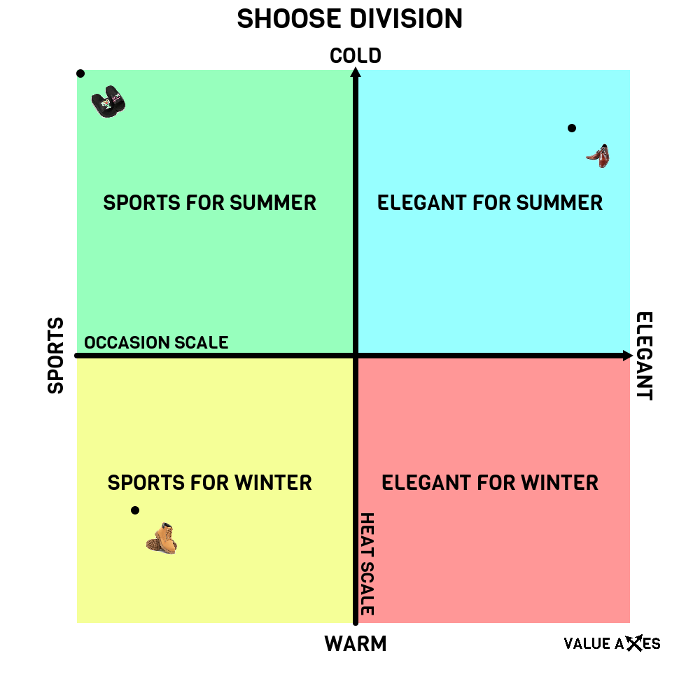

Why?
Charts make it easy to visualize and understand many things. It shows different ideas and differences
between them. In VALUE AXES You give names and extremes to your axes. You post name a quarter. If You would
You can add an example to your chart.

Example
You can create serious or fun charts. One of the most popular examples is the political compass. This
compass is
very usefull. You can do it at VALUE AXES. You can divide the shoes on the chart. Everything you come up
with. The only limit is your imagination